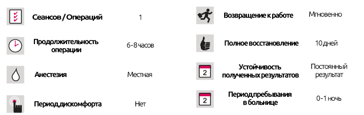
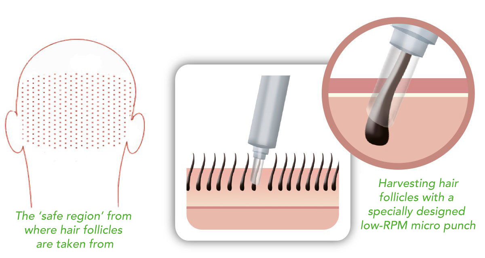

Трансплантация волос
Трансплантация волос
КРАТКОЕ ОПИСАНИЕ ЛЕЧЕНИЯ

Трансплантация волос с использованием чрескожной техники Sapphire.
Дом здоровой красоты во всех своих процедурах использует самые современные и самые инновационные методы, при этом трансплантация волос не является исключением, когда в наших медицинских центрах успешно выполняются пересадки волос, усов, бороды и бровей. Одним из самых инновационных методов является чрескожная техника Sapphire.
Сбор волосяных фолликулов:
Волосяные фолликулы «собирают» с затылка, известного как безопасный регион, с микро-ударами с низким числом оборотов в минуту под местной анестезией. Эти микро-перфораторы могут брать мультифолликулярные трансплантаты (с двумя или более фолликулами), не причиняя им вреда.
Сапфировая чрескожная техника
Подготовка зоны трансплантации:
Существуют два метода для подготовки зон для пересадки волосяных фолликулов:
Классический метод разрезания
Этот широко используемый метод использует двумерные разрезы, которые открываются с помощью тонкого хирургического лезвия в местах, где должны быть трансплантированы волосяные фолликулы.
Если мы берем эти разрезы длиной 2-5 мм, общая длина всех щелей для трансплантации 4000 фолликулов составляет около 8-20 метров. Количество сделанных разрезов является одним из наиболее важных факторов, определяющих продолжительность восстановления и количество рубцов. Кроме того, сами разрезы могут нанести вред здоровым волосяным фолликулам в области трансплантации и вызвать гангрену (некроз). Необходимо употреблять много жидкости, что означает, что примерно через 7-10 дней после процедуры может наблюдаться отек.

Сапфировая чрескожная техника
Это специальный метод, используемый в ограниченном количестве клиник по всему миру, в основном в Америке. Вместо того, чтобы разрезать, волосяные фолликулы пересаживают в трехмерные каналы, созданные при помощи тонких игол.
Сапфировая Чрескожная Техника-2
Метод Сапфировой Чрескожной Техники несет наименьший возможный риск нанесения вреда области трансплантации, поскольку открытые каналы имеют такую же ширину, что и волосяные фолликулы, а период восстановления в 2 раза быстрее. Область трансплантации восстанавливается за 2-3 дня и не оставляет рубцов. Эти тонкие каналы могут быть сделаны между отдельными волосяными фолликулами, таким образом предотвращая любой вред от них. Количество жидкости, применяемой при использовании Сапфировой Чрескожной Техники, также ниже, а это означает, что видимый отек после лечения также ниже.
Трансплантация волосяных фолликулов.
Одним из основных преимуществ чрескожной техники является то, что она оставляет «естественный результат», и здесь ключевым фактором получения естественного результата является угол, под которым пересаживаются волосяные фолликулы.
Сапфировая техника Perkutan - Пересадка волос
Before the operation, the patient’s photograph is taken and the desired look is created on the computer for the patient’s approval. This way, the patient will also learn the course of the operation and of the techniques that will be employed.
Minimum Age
Прорези, созданные с помощью метода прорези, больше, чем волосяные фолликулы, которые нельзя пересаживать под естественным углом, так как угол прорезей нельзя регулировать. Кроме того, пересаженные волосяные фолликулы могут перемещаться в прорезях, изменяя их угол, и даже могут выпадать.
Для естественной и успешной трансплантации волос также важна плотность пересаженных волосяных фолликулов.
При использовании метода разрезов необходимо оставлять пространство между относительно большими разрезами, чтобы они могли заживать, и это ограничивает возможную плотность трансплантата. Это означает, что в результате будет невозможно иметь полные и густые волосы.
Волосяные фолликулы, трансплантированные с помощью чрескожной техники Sapphire через трехмерные каналы с тонкими волосами, трансплантируются под самым естественным углом и не могут двигаться, то есть невозможно изменить этот угол после трансплантации. Волосяные фолликулы вводятся в каналы, крепясь за сами волосы, предотвращая причинение вреда фолликулам.
The patient is released a day after the operation. The silicone padding is removed 3-6 days later. Patients who have undergone an open rhinoplasty procedure have their stitches removed 6-7 days after the operation whereas the plaster is removed after 7-8 days.
Использование небольших каналов с чрескожной техникой Sapphire создает возможность иметь много каналов в непосредственной близости друг от друга, а это означает, что чрескожная техника способна обеспечить вдвое большую плотность при максимально возможном 40-50 на см2 кожи головы, создавая очень густую макушку волос.
Чрескожная техника Sapphire
Чрезвычайная техника Sapphire - это причина, по которой многие из наших пациентов, которые не любят рисковать для получения высококачественных результатов, выбирают нас для пересадки волос. В настоящее время он используется только в ведущих мировых клиниках, в основном в Америке.
Чрескожная техника Sapphire
За один сеанс с помощью чрескожной техники Sapphire, которая является предпочтительным вариантом для многих наших информированных иностранных пациентов, возможно пересадить до 6000 графов (12 500 - 15 000 волосяных фолликулов), так как она обеспечивает меньшую потерю волосяного фолликула и риск.